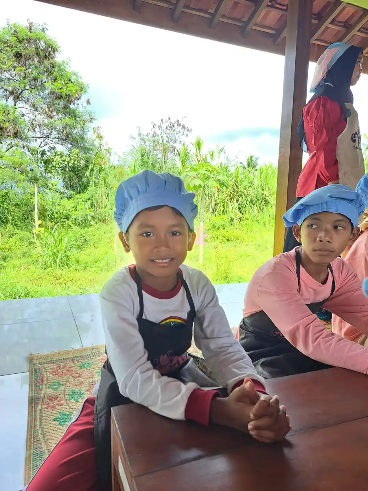
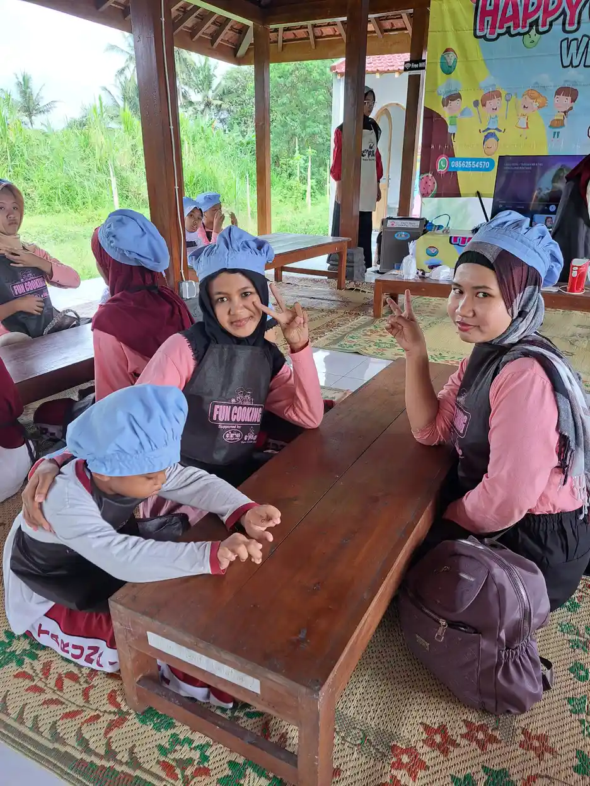

Tuna daksa adalah istilah dalam bahasa Indonesia yang digunakan untuk menyebut kondisi seseorang yang mengalami kelainan atau gangguan pada fungsi gerak tubuh. Istilah ini berasal dari dua kata: "tuna" yang berarti kurang atau rugi, dan "daksa" yang berarti tubuh atau fisik. Secara harfiah, tuna daksa merujuk pada kondisi keterbatasan atau kekurangan pada fungsi tubuh seseorang, baik yang bersifat bawaan sejak lahir maupun yang diperoleh di kemudian hari akibat penyakit atau kecelakaan.
Menurut data Survei Penduduk Antar Sensus (SUPAS) dan Badan Pusat Statistik (BPS) tahun 2022, Indonesia memiliki sekitar 22,97 juta penduduk penyandang disabilitas atau sekitar 8,5% dari total populasi. Dari jumlah tersebut, disabilitas fisik termasuk tuna daksa menjadi salah satu kategori yang paling banyak ditemui. Angka ini menunjukkan bahwa pemahaman masyarakat tentang tuna daksa sangat penting agar tercipta lingkungan yang inklusif dan mendukung.
Di Yayasan Ukhuwah Kaffah Amanatullah (YUKA), kami telah lama berkiprah mendampingi anak-anak berkebutuhan khusus, termasuk anak-anak dengan disabilitas fisik, melalui Sekolah Inklusi Taruna Imani di Sleman, Yogyakarta. Kami percaya bahwa setiap anak, terlepas dari kondisi fisiknya, memiliki potensi luar biasa yang layak untuk dikembangkan. Untuk pemahaman yang lebih luas tentang anak berkebutuhan khusus (ABK), Anda juga bisa membaca artikel kami sebelumnya.
Daftar Isi
Apa Itu Tuna Daksa?
Tuna daksa secara definitif adalah kondisi kelainan atau gangguan pada sistem otot, tulang, sendi, dan/atau saraf yang mengakibatkan gangguan pada fungsi gerak tubuh. Gangguan ini dapat berupa kelainan bentuk tubuh, ketidaklengkapan anggota tubuh, kelumpuhan, atau keterbatasan fungsi motorik lainnya. Penyandang tuna daksa memerlukan penyesuaian tertentu dalam menjalankan aktivitas sehari-hari, tetapi bukan berarti mereka tidak mampu mandiri atau berkontribusi dalam kehidupan bermasyarakat.
Menurut para ahli di bidang pendidikan luar biasa, tuna daksa dapat didefinisikan dari berbagai sudut pandang. Menurut Soemantri (2012), tuna daksa adalah suatu keadaan yang terganggu sebagai akibat dari gangguan bentuk atau hambatan pada tulang, otot, dan sendi dalam fungsinya yang normal. Kondisi ini bisa disebabkan oleh penyakit, kecelakaan, atau bawaan sejak lahir. Sementara itu, menurut Assjari (1995), tuna daksa adalah seseorang yang mengalami cacat tubuh atau merupakan penyandang disabilitas fisik yang mengganggu aktivitas dan penyesuaian dirinya di lingkungan sosial.
Penting untuk dipahami bahwa istilah "tuna daksa" kini mulai digantikan dengan istilah yang lebih positif dan menghargai, seperti "penyandang disabilitas fisik" atau "orang dengan hambatan fisik." Pergeseran istilah ini sejalan dengan semangat pemahaman tentang difabel (differently abled) yang menekankan bahwa setiap individu memiliki kemampuan yang berbeda, bukan sekadar kekurangan. Masyarakat diharapkan dapat melihat penyandang tuna daksa sebagai individu yang utuh, bukan sekadar dari keterbatasan fisik mereka.
Dalam konteks hukum di Indonesia, UU No. 8 Tahun 2016 tentang Penyandang Disabilitas mendefinisikan penyandang disabilitas sebagai setiap orang yang mengalami keterbatasan fisik, intelektual, mental, dan/atau sensorik dalam jangka waktu lama yang dalam berinteraksi dengan lingkungan dapat mengalami hambatan dan kesulitan untuk berpartisipasi secara penuh dan efektif. Definisi ini merupakan pergeseran paradigma dari model medis (yang memandang disabilitas sebagai masalah individu) menuju model sosial (yang melihat hambatan lingkungan sebagai akar masalah).
"Keterbatasan fisik bukanlah keterbatasan potensi. Setiap anak yang kami dampingi di YUKA membuktikan bahwa semangat dan kemauan mampu melampaui hambatan apa pun." - Tim Pendidik YUKA
Jenis-Jenis Tuna Daksa
Jenis tuna daksa dapat dikelompokkan berdasarkan letak gangguan, penyebab, dan tingkat keparahannya. Secara umum, tuna daksa terbagi menjadi dua kategori besar, yaitu tuna daksa murni (ortopedi) dan tuna daksa saraf (neurologis). Berikut penjelasan lengkap mengenai masing-masing jenis beserta contoh kondisinya.
1. Tuna Daksa Murni (Ortopedi)
Tuna daksa murni atau tuna daksa ortopedi merujuk pada kelainan yang terjadi pada sistem otot, tulang, dan sendi tanpa disertai gangguan pada sistem saraf pusat. Pada kondisi ini, fungsi kognitif dan kecerdasan penyandangnya umumnya tidak terpengaruh. Beberapa contoh tuna daksa murni antara lain:
- Poliomielitis (Polio): Penyakit yang disebabkan oleh virus polio yang menyerang saraf motorik di sumsum tulang belakang, mengakibatkan kelumpuhan pada otot-otot tertentu. Meskipun kini sudah jarang ditemui berkat program vaksinasi, masih ada penyandang polio di Indonesia yang membutuhkan pendampingan.
- Amputasi: Hilangnya sebagian atau seluruh anggota tubuh, baik akibat kecelakaan, penyakit tertentu (seperti diabetes), maupun tindakan medis. Penyandang amputasi biasanya menggunakan anggota tubuh buatan (prostesis) untuk membantu aktivitas sehari-hari.
- Displasia tulang: Kelainan pertumbuhan tulang yang menyebabkan bentuk atau ukuran tubuh tidak proporsional. Salah satu bentuk yang umum dikenal adalah achondroplasia atau dwarfisme.
- Osteogenesis imperfecta: Kelainan genetik yang menyebabkan tulang menjadi sangat rapuh dan mudah patah. Kondisi ini sering disebut "penyakit tulang kaca" karena tulang penyandangnya begitu rentan.
- Skoliosis berat: Kelengkungan tulang belakang yang abnormal ke arah samping, yang dapat memengaruhi postur tubuh dan fungsi gerak jika tidak ditangani sejak dini.
2. Tuna Daksa Saraf (Neurologis)
Tuna daksa saraf atau tuna daksa neurologis adalah kelainan yang disebabkan oleh gangguan pada sistem saraf pusat (otak dan sumsum tulang belakang). Pada kondisi ini, gangguan gerak seringkali disertai dengan hambatan lain seperti gangguan bicara, penglihatan, atau bahkan fungsi kognitif. Beberapa contoh tuna daksa saraf meliputi:
- Cerebral Palsy (CP): Gangguan gerak dan postur tubuh yang disebabkan oleh kerusakan otak yang terjadi sebelum, selama, atau sesaat setelah kelahiran. CP merupakan salah satu penyebab tuna daksa yang paling umum pada anak-anak. Tingkat keparahannya bervariasi, mulai dari yang ringan (hanya sedikit gangguan koordinasi) hingga berat (memerlukan bantuan penuh dalam aktivitas sehari-hari).
- Spina Bifida: Kelainan bawaan pada tulang belakang di mana satu atau beberapa ruas tulang belakang tidak menutup sempurna selama perkembangan janin. Hal ini dapat mengakibatkan kerusakan pada sumsum tulang belakang dan saraf, menyebabkan kelumpuhan pada bagian tubuh di bawah area yang terkena.
- Distrofi otot (Muscular Dystrophy): Kelompok penyakit genetik yang menyebabkan kelemahan dan degenerasi progresif pada otot-otot rangka. Penyandangnya mengalami penurunan kekuatan otot secara bertahap seiring bertambahnya usia.
- Stroke pada anak: Meskipun jarang, stroke dapat terjadi pada anak-anak dan mengakibatkan kelumpuhan pada satu sisi tubuh (hemiplegia), sehingga menyebabkan keterbatasan gerak yang signifikan.

Pemahaman tentang jenis-jenis tuna daksa ini sangat penting karena setiap jenis memerlukan pendekatan penanganan dan pendidikan yang berbeda. Seorang anak dengan cerebral palsy memiliki kebutuhan yang sangat berbeda dengan anak yang mengalami amputasi, meskipun keduanya sama-sama tergolong sebagai penyandang tuna daksa. Pendekatan yang tepat dan individual menjadi kunci keberhasilan dalam mendampingi mereka.
Penyebab Tuna Daksa
Penyebab tuna daksa sangat beragam dan dapat terjadi pada berbagai tahap kehidupan seseorang. Para ahli medis dan pendidikan luar biasa umumnya mengelompokkan penyebab tuna daksa ke dalam tiga periode utama: sebelum kelahiran (prenatal), saat kelahiran (perinatal), dan setelah kelahiran (postnatal). Memahami penyebab ini penting tidak hanya untuk pencegahan, tetapi juga untuk menentukan strategi penanganan yang paling tepat.
Penyebab Prenatal (Sebelum Kelahiran)
Faktor-faktor yang terjadi selama masa kehamilan dapat memengaruhi perkembangan fisik janin dan menyebabkan tuna daksa. Beberapa penyebab prenatal yang umum meliputi:
- Faktor genetik dan keturunan: Beberapa kondisi tuna daksa bersifat genetik, seperti osteogenesis imperfecta, distrofi otot, dan spina bifida. Kelainan pada gen atau kromosom dapat menyebabkan gangguan pada perkembangan sistem otot, tulang, atau saraf janin.
- Infeksi selama kehamilan: Infeksi virus seperti rubella (campak Jerman), cytomegalovirus (CMV), dan toxoplasmosis pada ibu hamil, terutama pada trimester pertama, dapat mengganggu perkembangan otak dan sistem saraf janin, yang berpotensi menyebabkan cerebral palsy atau kelainan fisik lainnya.
- Kekurangan gizi pada ibu hamil: Nutrisi yang tidak memadai, terutama kekurangan asam folat, dapat meningkatkan risiko kelainan tabung saraf seperti spina bifida. Oleh karena itu, konsumsi asam folat yang cukup sebelum dan selama kehamilan sangat dianjurkan.
- Paparan zat berbahaya: Penggunaan obat-obatan tertentu, alkohol, rokok, atau paparan bahan kimia berbahaya selama kehamilan dapat memengaruhi perkembangan fisik janin dan meningkatkan risiko kelainan bawaan.
- Trauma atau cedera pada ibu hamil: Benturan fisik yang keras pada area perut selama kehamilan dapat berdampak pada perkembangan janin dan berpotensi menyebabkan gangguan pada sistem gerak.
Penyebab Perinatal (Saat Kelahiran)
Proses persalinan yang mengalami komplikasi juga dapat menjadi penyebab tuna daksa pada anak. Faktor-faktor perinatal meliputi:
- Kelahiran prematur: Bayi yang lahir terlalu dini (sebelum usia kehamilan 37 minggu) memiliki risiko lebih tinggi mengalami gangguan perkembangan, termasuk cerebral palsy, karena organ-organ tubuhnya belum sepenuhnya berkembang.
- Asfiksia neonatorum: Kekurangan oksigen pada bayi saat proses persalinan (birth asphyxia) dapat menyebabkan kerusakan otak yang mengakibatkan cerebral palsy dan gangguan motorik lainnya.
- Trauma persalinan: Penggunaan alat bantu persalinan yang tidak tepat atau persalinan yang terlalu lama dapat menyebabkan cedera pada bayi, terutama pada kepala dan sistem sarafnya.
- Berat badan lahir rendah (BBLR): Bayi dengan berat badan lahir di bawah 2.500 gram memiliki risiko yang lebih tinggi untuk mengalami berbagai gangguan perkembangan, termasuk gangguan pada fungsi motorik.
Penyebab Postnatal (Setelah Kelahiran)
Tuna daksa juga dapat terjadi setelah anak lahir dan tumbuh. Penyebab postnatal meliputi:
- Kecelakaan: Kecelakaan lalu lintas, terjatuh dari ketinggian, atau cedera berat lainnya dapat menyebabkan patah tulang, cedera tulang belakang, atau amputasi yang mengakibatkan kondisi tuna daksa.
- Penyakit infeksi: Penyakit seperti poliomielitis, meningitis, dan ensefalitis dapat menyerang sistem saraf dan menyebabkan kelumpuhan atau gangguan motorik permanen.
- Tumor atau kanker tulang: Pertumbuhan tumor pada tulang atau jaringan sekitarnya dapat menyebabkan kerusakan pada struktur tulang dan memerlukan tindakan pengangkatan atau amputasi.
- Kondisi medis kronis: Penyakit seperti artritis reumatoid juvenil, diabetes yang tidak terkontrol, atau gangguan vaskular dapat berdampak pada fungsi gerak tubuh dalam jangka panjang.
Tahukah Anda?
Berdasarkan data BPS tahun 2022, prevalensi disabilitas di Indonesia mencapai 8,5% dari total populasi. Dari jumlah tersebut, disabilitas fisik (termasuk tuna daksa) menjadi salah satu jenis yang paling banyak dijumpai. Program vaksinasi polio yang masif di Indonesia sejak tahun 1990-an telah berhasil menurunkan kasus poliomielitis secara signifikan, meskipun masih ditemukan kasus sporadis di beberapa daerah.
Ciri-Ciri dan Klasifikasi Tuna Daksa
Mengenali ciri-ciri penyandang tuna daksa menjadi langkah penting dalam memberikan penanganan dan dukungan yang tepat. Ciri-ciri tuna daksa sangat bervariasi tergantung pada jenis, lokasi, dan tingkat keparahan gangguan yang dialami. Berikut adalah penjelasan mengenai ciri-ciri umum serta klasifikasi tuna daksa berdasarkan tingkat keparahannya.
Ciri-Ciri Umum Penyandang Tuna Daksa
Ciri-ciri yang dapat diamati pada penyandang tuna daksa meliputi:
- Gangguan pada fungsi gerak: Kesulitan dalam berjalan, berlari, menggenggam benda, menulis, atau melakukan gerakan motorik kasar maupun halus lainnya. Tingkat kesulitan ini bervariasi dari ringan hingga berat.
- Kelainan bentuk tubuh: Bentuk tubuh yang tidak proporsional, postur tubuh yang tidak simetris, atau adanya bagian tubuh yang tidak tumbuh sempurna. Misalnya, kaki yang tidak sama panjang atau tulang belakang yang bengkok.
- Kekakuan atau kelemahan otot: Otot-otot yang terlalu kaku (spastisitas) atau terlalu lemah (flaccid) sehingga mengganggu kemampuan mengontrol gerakan tubuh dengan baik.
- Gerakan involunter: Pada beberapa jenis tuna daksa seperti cerebral palsy tipe atetoid, penyandangnya mengalami gerakan-gerakan yang tidak disengaja dan sulit dikendalikan.
- Gangguan keseimbangan dan koordinasi: Kesulitan dalam menjaga keseimbangan tubuh, koordinasi tangan-mata, dan melakukan gerakan yang memerlukan ketelitian.
- Ketergantungan pada alat bantu: Beberapa penyandang tuna daksa memerlukan alat bantu seperti kursi roda, kruk, walker, splint, atau prostesis untuk mendukung mobilitas mereka.
Klasifikasi Berdasarkan Tingkat Keparahan
Untuk menentukan jenis layanan dan dukungan yang diperlukan, tuna daksa dapat diklasifikasikan berdasarkan tingkat keparahannya:
- Tuna daksa ringan: Penyandangnya masih dapat bergerak dan melakukan sebagian besar aktivitas sehari-hari secara mandiri, mungkin dengan sedikit bantuan atau adaptasi. Mereka umumnya dapat mengikuti pendidikan di sekolah reguler atau sekolah inklusi dengan penyesuaian minimal.
- Tuna daksa sedang: Penyandangnya memerlukan alat bantu dan modifikasi lingkungan untuk melakukan aktivitas sehari-hari. Mereka membutuhkan pendampingan dalam beberapa hal tetapi masih dapat mandiri dalam hal-hal tertentu. Pendidikan di sekolah inklusi dengan dukungan khusus sangat direkomendasikan.
- Tuna daksa berat: Penyandangnya memerlukan bantuan penuh dalam hampir semua aktivitas sehari-hari. Mereka mungkin tidak dapat bergerak secara mandiri dan membutuhkan pendampingan intensif. Pendidikan khusus atau pendidikan di rumah dengan tenaga pendidik terlatih mungkin diperlukan.
Klasifikasi Berdasarkan Lokasi Kelumpuhan
Dalam dunia medis dan pendidikan, tuna daksa juga diklasifikasikan berdasarkan lokasi anggota tubuh yang mengalami gangguan:
- Monoplegia: Kelumpuhan pada satu anggota tubuh (satu tangan atau satu kaki).
- Diplegia: Kelumpuhan pada kedua kaki, sementara kedua tangan masih berfungsi normal atau hanya mengalami sedikit gangguan.
- Hemiplegia: Kelumpuhan pada satu sisi tubuh (tangan dan kaki pada sisi yang sama).
- Paraplegia: Kelumpuhan pada kedua kaki dan bagian bawah tubuh, biasanya akibat cedera sumsum tulang belakang.
- Triplegia: Kelumpuhan pada tiga anggota tubuh, misalnya kedua kaki dan satu tangan.
- Quadriplegia (Tetraplegia): Kelumpuhan pada keempat anggota tubuh (kedua tangan dan kedua kaki), biasanya disertai gangguan pada otot-otot tubuh lainnya.
Pemahaman tentang klasifikasi ini sangat penting bagi orang tua, guru, dan tenaga profesional dalam merancang program pendidikan dan rehabilitasi yang sesuai. Setiap anak tuna daksa memiliki kebutuhan yang unik, dan pendekatan yang bersifat individual selalu memberikan hasil yang lebih baik. Untuk mengetahui lebih lanjut tentang berbagai jenis anak berkebutuhan khusus, Anda bisa membaca artikel kami tentang tunagrahita sebagai perbandingan.
Hak dan Perlindungan Hukum Penyandang Tuna Daksa

Indonesia telah memiliki kerangka hukum yang cukup komprehensif untuk melindungi hak-hak penyandang tuna daksa dan penyandang disabilitas pada umumnya. Landasan hukum utama yang mengatur hak penyandang disabilitas di Indonesia adalah UU No. 8 Tahun 2016 tentang Penyandang Disabilitas, yang menggantikan UU No. 4 Tahun 1997 tentang Penyandang Cacat. Perubahan undang-undang ini mencerminkan pergeseran paradigma dalam memandang disabilitas dari pendekatan sosial karitatif menuju pendekatan berbasis hak asasi manusia.
Hak-Hak Penyandang Tuna Daksa Berdasarkan UU No. 8 Tahun 2016
UU No. 8 Tahun 2016 mengakui dan menjamin berbagai hak bagi penyandang disabilitas, termasuk penyandang tuna daksa. Hak-hak tersebut meliputi:
- Hak hidup: Setiap penyandang disabilitas berhak untuk hidup, mempertahankan kehidupannya, serta memperoleh perawatan dan penghidupan yang layak. Negara wajib menjamin kelangsungan hidup penyandang disabilitas.
- Hak pendidikan: Penyandang tuna daksa berhak mendapatkan pendidikan yang bermutu di semua jenis, jalur, dan jenjang pendidikan. Sekolah umum wajib menerima siswa penyandang disabilitas dan menyediakan akomodasi yang wajar.
- Hak pekerjaan: Pemerintah dan swasta wajib menyediakan kesempatan kerja bagi penyandang disabilitas. Perusahaan dengan minimal 100 karyawan wajib mempekerjakan sekurang-kurangnya 1% penyandang disabilitas, sementara instansi pemerintah wajib mempekerjakan 2%.
- Hak kesehatan: Penyandang tuna daksa berhak memperoleh layanan kesehatan yang komprehensif, termasuk rehabilitasi medis, penyediaan alat bantu, dan jaminan kesehatan yang memadai.
- Hak aksesibilitas: Penyandang tuna daksa berhak atas aksesibilitas dalam memanfaatkan fasilitas publik. Gedung, transportasi, informasi, dan teknologi harus dirancang agar dapat diakses oleh semua orang, termasuk penyandang disabilitas fisik.
- Hak politik: Penyandang tuna daksa memiliki hak yang sama dalam berpartisipasi dalam kehidupan politik, termasuk hak memilih dan dipilih dalam pemilihan umum.
- Hak sosial dan budaya: Penyandang tuna daksa berhak berpartisipasi dalam kegiatan sosial, budaya, olahraga, dan rekreasi tanpa diskriminasi.
Regulasi Terkait Lainnya
Selain UU No. 8 Tahun 2016, terdapat beberapa regulasi lain yang mendukung perlindungan hak penyandang tuna daksa di Indonesia:
- PP No. 13 Tahun 2020 tentang Akomodasi yang Layak untuk Peserta Didik Penyandang Disabilitas, yang mengatur secara teknis bagaimana sekolah harus menyediakan fasilitas bagi siswa disabilitas.
- UU No. 19 Tahun 2011 tentang Pengesahan Convention on the Rights of Persons with Disabilities (Konvensi Hak-Hak Penyandang Disabilitas), yang meratifikasi konvensi PBB tentang hak penyandang disabilitas.
- Permendikbud No. 70 Tahun 2009 tentang Pendidikan Inklusif bagi Peserta Didik yang Memiliki Kelainan dan Memiliki Potensi Kecerdasan dan/atau Bakat Istimewa.
Meskipun kerangka hukum sudah cukup lengkap, implementasi di lapangan masih menghadapi berbagai tantangan. Masih banyak fasilitas publik yang belum ramah terhadap penyandang tuna daksa, diskriminasi dalam dunia kerja masih terjadi, dan akses pendidikan inklusif belum merata di seluruh wilayah Indonesia. Oleh karena itu, peran serta masyarakat dan lembaga seperti YUKA sangat penting dalam memastikan hak-hak penyandang tuna daksa benar-benar terpenuhi.
Pendidikan dan Aksesibilitas untuk Tuna Daksa
Pendidikan merupakan hak fundamental bagi setiap anak, termasuk anak dengan kondisi tuna daksa. Sistem pendidikan inklusi menjadi salah satu pendekatan yang paling efektif dalam memastikan anak-anak tuna daksa mendapatkan pendidikan yang berkualitas bersama teman-teman sebayanya. Di Indonesia, pendidikan inklusi telah menjadi kebijakan nasional, meskipun penerapannya masih menghadapi berbagai hambatan.
Model Pendidikan untuk Anak Tuna Daksa
Ada beberapa model pendidikan yang dapat diterapkan bagi anak tuna daksa, tergantung pada tingkat keparahan dan kebutuhan individual mereka:
- Sekolah inklusi: Anak tuna daksa belajar di sekolah reguler bersama siswa non-disabilitas, dengan penyediaan akomodasi yang wajar. Model ini paling direkomendasikan karena memberikan kesempatan interaksi sosial yang luas dan menghilangkan stigma.
- Sekolah Luar Biasa (SLB) tipe D: Sekolah khusus bagi anak tuna daksa yang menyediakan layanan pendidikan dan rehabilitasi secara terpadu. SLB tipe D diperuntukkan bagi anak dengan tingkat keparahan yang cukup berat yang memerlukan penanganan intensif.
- Home schooling atau pendidikan jarak jauh: Bagi anak tuna daksa yang tidak memungkinkan hadir di sekolah secara fisik, pendidikan di rumah atau pendidikan jarak jauh dapat menjadi alternatif yang tetap menjamin hak belajar mereka.
Aksesibilitas Fisik yang Diperlukan
Untuk mendukung keberhasilan pendidikan anak tuna daksa, lingkungan sekolah harus dilengkapi dengan fasilitas aksesibilitas yang memadai. Peran orang tua dalam pendidikan inklusi juga sangat menentukan keberhasilan pendidikan anak tuna daksa. Beberapa fasilitas aksesibilitas yang penting antara lain:
- Ramp (jalur landai): Pengganti tangga yang memungkinkan pengguna kursi roda atau alat bantu jalan lainnya untuk berpindah antar lantai atau memasuki gedung dengan mudah.
- Lift atau elevator: Untuk bangunan bertingkat, lift menjadi kebutuhan penting bagi siswa pengguna kursi roda.
- Toilet ramah disabilitas: Toilet yang dirancang lebih luas dengan pegangan tangan dan ketinggian kloset yang sesuai untuk pengguna kursi roda.
- Meja dan kursi yang dapat disesuaikan: Furnitur kelas yang dapat diatur ketinggiannya atau memiliki desain khusus untuk mengakomodasi siswa dengan berbagai jenis keterbatasan fisik.
- Permukaan lantai yang rata dan tidak licin: Untuk memudahkan mobilitas dan mencegah kecelakaan bagi siswa yang menggunakan alat bantu jalan.
- Koridor yang cukup lebar: Minimal 1,5 meter untuk memungkinkan kursi roda bergerak dengan leluasa.
Teknologi Bantu dalam Pendidikan
Kemajuan teknologi telah membuka peluang besar bagi anak tuna daksa untuk mengakses pendidikan dengan lebih mudah. Beberapa teknologi bantu yang dapat dimanfaatkan antara lain:
- Komputer dengan perangkat input adaptif: Keyboard khusus, mouse adaptif, atau perangkat kontrol suara yang memudahkan anak tuna daksa mengoperasikan komputer untuk belajar.
- Perangkat lunak pengenal suara (speech recognition): Teknologi yang memungkinkan siswa menulis atau mengoperasikan komputer menggunakan perintah suara, sangat bermanfaat bagi mereka yang mengalami keterbatasan pada tangan.
- Alat tulis adaptif: Pensil atau pulpen dengan pegangan khusus yang dirancang agar mudah digenggam oleh anak dengan gangguan motorik halus.
- Tablet dan aplikasi pendidikan: Layar sentuh pada tablet seringkali lebih mudah digunakan dibandingkan keyboard konvensional, dan banyak aplikasi pendidikan yang dirancang khusus untuk anak berkebutuhan khusus.
Dukungan YUKA untuk Anak dengan Disabilitas Fisik

Yayasan Ukhuwah Kaffah Amanatullah (YUKA) melalui Sekolah Inklusi Taruna Imani di Sleman, Yogyakarta, memiliki komitmen kuat dalam memberikan pendidikan dan pendampingan bagi anak-anak berkebutuhan khusus, termasuk anak-anak dengan disabilitas fisik atau tuna daksa. YUKA percaya bahwa setiap anak memiliki hak yang sama untuk mendapatkan pendidikan berkualitas, pengembangan potensi, dan kehidupan yang bermartabat.
Program Pendidikan Inklusi YUKA
Sekolah Inklusi Taruna Imani menerapkan pendekatan pendidikan inklusi yang memungkinkan anak-anak dengan berbagai kebutuhan khusus belajar bersama dalam lingkungan yang mendukung dan tanpa diskriminasi. Dalam konteks anak tuna daksa, YUKA menyediakan:
- Kurikulum yang fleksibel: Materi pembelajaran disesuaikan dengan kemampuan dan kebutuhan setiap anak. Anak tuna daksa mendapatkan modifikasi tugas dan evaluasi yang mempertimbangkan keterbatasan fisik mereka tanpa mengurangi esensi pembelajaran.
- Guru dan pendamping terlatih: Tenaga pendidik di YUKA mendapatkan pelatihan khusus dalam menangani anak berkebutuhan khusus, termasuk memahami kebutuhan unik anak tuna daksa dan cara memberikan dukungan yang tepat di dalam kelas.
- Lingkungan belajar yang ramah: YUKA berupaya menyediakan lingkungan fisik yang aksesibel bagi anak tuna daksa, mulai dari penataan ruang kelas hingga ketersediaan fasilitas pendukung.
Program Pemberdayaan dan Keterampilan Hidup
Selain pendidikan akademis, YUKA juga menyelenggarakan berbagai program pemberdayaan anak berkebutuhan khusus yang bertujuan melatih kemandirian dan keterampilan hidup anak tuna daksa. Program-program ini meliputi:
- Terapi keterampilan hidup sehari-hari: Melatih anak untuk dapat melakukan aktivitas dasar secara mandiri, seperti makan, berpakaian, menjaga kebersihan diri, dan berinteraksi sosial.
- Kegiatan keterampilan tangan: Program seni, kerajinan, dan keterampilan lainnya yang disesuaikan dengan kemampuan motorik anak, bertujuan mengembangkan kreativitas dan rasa percaya diri.
- Olahraga adaptif: Kegiatan olahraga yang dimodifikasi agar dapat diikuti oleh anak tuna daksa, membantu menjaga kesehatan fisik dan membangun semangat sportivitas.
- Program wisata edukasi: Kegiatan kunjungan ke berbagai tempat edukatif yang dirancang untuk memperluas wawasan dan memberikan pengalaman belajar langsung bagi anak-anak, termasuk anak tuna daksa.
Setiap Anak Berharga di Mata YUKA
Di YUKA, kami menyaksikan sendiri bagaimana anak-anak dengan berbagai keterbatasan fisik mampu menunjukkan kemajuan yang luar biasa ketika diberikan kesempatan, dukungan, dan kasih sayang yang tepat. Seorang anak yang awalnya mengalami kesulitan dalam menulis karena gangguan motorik halus, kini mampu menghasilkan karya tulis yang membanggakan. Anak lain yang menggunakan kursi roda berhasil menyelesaikan pendidikan dasar dan menjadi inspirasi bagi teman-temannya. Cerita-cerita ini menegaskan keyakinan kami bahwa keterbatasan fisik tidak pernah menjadi penghalang bagi semangat belajar dan berprestasi.
YUKA sebagai yayasan sosial yang fokus pada anak berkebutuhan khusus terus berkomitmen untuk meningkatkan kualitas layanan dan memperluas jangkauan dampak. Dukungan dari masyarakat, baik melalui donasi, tenaga sukarelawan, maupun advokasi, sangat berarti dalam mewujudkan misi ini. Bersama-sama, kita dapat menciptakan Indonesia yang lebih inklusif bagi semua anak, termasuk penyandang tuna daksa.
Jika Anda ingin mengetahui lebih banyak tentang bagaimana YUKA mendampingi anak berkebutuhan khusus secara keseluruhan, silakan kunjungi halaman Program YUKA atau hubungi kami langsung.
FAQ Seputar Tuna Daksa
Berikut adalah pertanyaan-pertanyaan yang sering diajukan mengenai tuna daksa beserta jawabannya. Informasi ini kami susun berdasarkan pertanyaan yang paling banyak disampaikan oleh orang tua, guru, dan masyarakat umum.
1. Apa yang dimaksud dengan tuna daksa?
Tuna daksa adalah kondisi seseorang yang mengalami kelainan atau gangguan pada sistem otot, tulang, sendi, atau saraf sehingga menyebabkan keterbatasan dalam fungsi gerak tubuh. Istilah ini berasal dari kata "tuna" (kurang/rugi) dan "daksa" (tubuh/fisik). Kondisi tuna daksa bisa bersifat bawaan sejak lahir, seperti cerebral palsy dan spina bifida, maupun didapat setelah lahir akibat kecelakaan, infeksi penyakit, atau kondisi medis tertentu. Penting untuk diingat bahwa tuna daksa hanya memengaruhi fungsi fisik, bukan kecerdasan atau potensi seseorang.
2. Apa saja jenis-jenis tuna daksa?
Jenis tuna daksa secara umum terbagi menjadi dua kategori besar. Pertama, tuna daksa murni (ortopedi) yang meliputi kelainan pada sistem otot dan rangka seperti poliomielitis, amputasi, displasia tulang, osteogenesis imperfecta, dan skoliosis berat. Kedua, tuna daksa saraf (neurologis) yang meliputi gangguan pada sistem saraf pusat seperti cerebral palsy, spina bifida, distrofi otot, dan akibat stroke. Masing-masing jenis memiliki karakteristik dan kebutuhan penanganan yang berbeda, sehingga pendekatan individual sangat diperlukan.
3. Apakah anak tuna daksa bisa bersekolah di sekolah umum?
Ya, anak tuna daksa memiliki hak penuh untuk bersekolah di sekolah umum melalui sistem pendidikan inklusi. UU No. 8 Tahun 2016 tentang Penyandang Disabilitas serta PP No. 13 Tahun 2020 tentang Akomodasi yang Layak untuk Peserta Didik Penyandang Disabilitas menjamin hak ini. Sekolah inklusi wajib menyediakan akomodasi yang wajar, termasuk aksesibilitas fisik (ramp, toilet khusus, meja yang dapat disesuaikan), alat bantu pembelajaran, dan guru pendamping khusus (GPK). YUKA melalui Sekolah Inklusi Taruna Imani menjadi salah satu contoh nyata bagaimana pendidikan inklusi dapat berjalan efektif bagi anak tuna daksa.
4. Apa penyebab utama tuna daksa pada anak?
Penyebab tuna daksa pada anak sangat beragam dan dapat dikelompokkan berdasarkan periode terjadinya. Penyebab prenatal (sebelum lahir) meliputi faktor genetik, infeksi selama kehamilan seperti rubella, kekurangan nutrisi terutama asam folat, dan paparan zat berbahaya. Penyebab perinatal (saat lahir) meliputi kelahiran prematur, asfiksia (kekurangan oksigen), dan trauma persalinan. Penyebab postnatal (setelah lahir) meliputi kecelakaan, penyakit infeksi seperti polio dan meningitis, serta kondisi medis kronis. Dengan pemahaman tentang penyebab ini, upaya pencegahan dan deteksi dini dapat dilakukan lebih efektif.
5. Bagaimana cara mendukung anak tuna daksa agar tumbuh percaya diri?
Mendukung anak tuna daksa agar tumbuh percaya diri memerlukan pendekatan holistik dari keluarga, sekolah, dan masyarakat. Langkah-langkah konkret yang dapat dilakukan antara lain: memberikan kesempatan yang sama untuk berpartisipasi dalam aktivitas bersama teman sebaya, menyediakan alat bantu yang sesuai kebutuhan, mendorong kemandirian secara bertahap dalam aktivitas sehari-hari, memberikan apresiasi atas setiap usaha dan pencapaian (bukan hanya hasil), menghindari sikap overprotektif yang justru menghambat perkembangan, serta menciptakan lingkungan yang inklusif dan bebas dari perundungan atau diskriminasi. Dukungan emosional dan penerimaan tanpa syarat dari keluarga menjadi fondasi utama bagi kepercayaan diri anak tuna daksa.
Baca Juga Artikel Terkait:
Sumber Resmi & Referensi Authoritative
Konten artikel ini diperkuat dengan referensi dari lembaga resmi pemerintah dan organisasi kesehatan internasional:
- UU No. 8 Tahun 2016 tentang Penyandang Disabilitas peraturan.bpk.go.id
- Kemenkes Ayo Sehat: Kumpulan Link Penting untuk Anak Disabilitas ayosehat.kemkes.go.id
- Kemenkes Yankes: Hak Anak Berkebutuhan Khusus keslan.kemkes.go.id
- Kemdikbudristek: Panduan Pelaksanaan Pendidikan Inklusif (2022) repositori.kemendikdasmen.go.id
Disclaimer Medis & Pendidikan: Artikel ini bersifat edukasi umum dan bukan pengganti konsultasi profesional. Untuk diagnosis, asesmen, atau penanganan anak berkebutuhan khusus, silakan konsultasikan langsung dengan dokter anak, psikiater anak, psikolog perkembangan, terapis okupasi, atau tenaga ahli pendidikan khusus yang berlisensi. YUKA Indonesia mendukung pendekatan multidisiplin dan tidak menggantikan peran tenaga medis maupun terapis profesional.